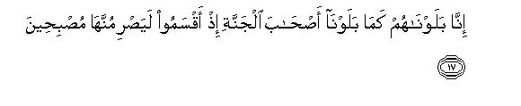
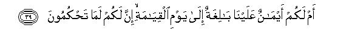
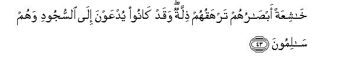
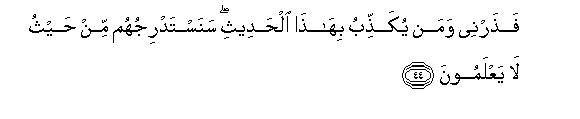
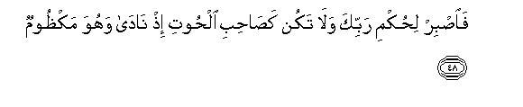
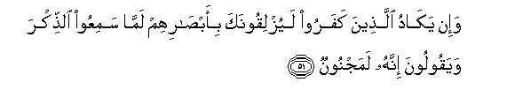

بسم الله الرحمن الرحيم
Sayyid Abul Ala Maududi - Tafhim al-Qur'an - The Meaning of the Qur'an
 68.
Surah Al Qalam (The Pen)
68.
Surah Al Qalam (The Pen)
This Surah is called Nun as well as Al-Qalam, the words with which it begins.
This too is one of the earliest surahs to be revealed at Makkah, but its subject matter shows that it was sent down at the time when opposition to the Holy Prophet (upon whom be peace) had grown very harsh and tyrannical.
It consists of three themes: Replies to the opponents objections, administration of warning and admonition to them, and exhortation to the Holy Prophet (upon whom be peace) to patience and constancy.
At the outset, the Holy Prophet has been addressed, to the effect: "The disbelievers call you a madman whereas the Book that you are presenting and the sublime conduct that you practice, are by themselves sufficient to refute their false accusations. Soon they will see as to who was mad and who was sane; therefore, do not at all yield to the din of opposition being kicked up against you, for all this is actually meant to cow you and make you resort to a compromise with them."
Then, in order to enlighten the common people the character of a prominent man from among the opponents, whom the people of Makkah fully well recognized, has been presented, without naming him:At that time, the Holy Prophet's pure and sublime conduct was before them, and every discerning eye could also see what sort of character and morals were possessed by the chiefs of Makkah, who were leading the opposition against him.
Then, in vv. 17-33, the parable of the owners of a garden has been presented, who after having been blessed by Allah turned ungrateful to Him, and did not heed the admonition of the best man among them when it was given them. Consequently, they were deprived of the blessing and they realized this, when all they had lay devastated. With this parable the people of Makkah have been warned to the effect:"With the appointment of the Holy Prophet (upon whom be peace) to Prophethood, you, O people of Makkah, too, have been put to a test similar to the one to which the owners of the garden had been put. If you do not listen to him, you too will be afflicted with a punishment in the world, and the punishment of the Hereafter is far greater."
Then, in vv. 34-47 continuously, the disbelievers have been admonished, in which the address sometimes turns to them directly and sometimes they are warned through the Holy Prophet (upon whom be peace). A summary of what has been said in this regard, is this: Well being in the Hereafter inevitably belongs to those who spend their lives in the world in full consciousness of God. It is utterly against reason that the obedient servants should meet in the Hereafter the same fate as the guilty. There is absolutely no basis of the disbelievers misunderstanding that God will treat them in the manner they choose for themselves, whereas they have no guarantee for this. Those who are being called upon to bow before God in the world and they refuse to do so, would be unable to prostrate themselves on the Day of Resurrection even if they wanted to do so, and thus would stand disgraced and condemned. Having denied the Qur'an they cannot escape Divine punishment. The rein they are being given, has deluded them. They think that since they are not being punished in spite of their denial, they must be on the right path, whereas they are following the path of ruin. They have no reasonable ground for opposing the Messenger, for he is a preacher without any vested interest: he is not asking any reward of them for himself, and they cannot either make the claim that they know with certainty that he is not a true Messenger, nor that what he says is false.
In conclusion, the Holy Prophet (upon whom be peace) has been exhorted to the effect:"Bear with patience the hardships that you may have to face in the way of preaching the Faith till Allah's judgment arrives, and avoid the impatience which caused suffering and affliction to the Prophet Jonah (peace be on him)."

In the name of Allah, the Compassionate, the Merciful.
[1-16] Nun. By the Pen and by that which the writers are writing,1 you are not, by the grace of your Lord, mad.2 And surely you have a reward that shall never end,3 and surely you are exalted to a high and noble character.4 Soon you shall see as well as they, which of you is afflicted with madness. Your Lord best knows those who have strayed from His Way and He best knows also those who are rightly guided. Therefore, do not at all yield to the beliers of the Truth. They indeed wish that you should compromise a little, then they also would compromises5 Do not at all yield to any mean swearer of many oaths,6 who is a slanderer and a backbiter, a hinderer of good7 and a transgressor, wicked and oppressive,8 and above all, ignoble by birth,9 only because he has abundance of wealth and children.10 When Our Revelations are recited to him, he says, "These are tales of the ancient times." Soon We shall brand him on the snout.11

[17-33] We have tried them (the people of Makkah) just as we had tried the owners of a certain garden,12 when they swore that they would surely pluck the fruit of their garden next morning, and they did not make any exception.13 But while they lay asleep at night, a calamity from your Lord visited the garden and it became as though it had already been reaped. In the morning they called out to one another, saying: "Go forth early to your tilth14 if you would pluck fruit." So they set out, whispering to one another, "Let no needy man approach you in the garden today." They hurried off early (to their garden) with the resolve not to give away anything15 as though they had the power (to pluck the fruit). But when they saw the garden, they said, "We have lost our way!-Nay, but we have been left destitute!"16 The best man among them said, "Did I not tell you, `Why do you not glorify (Allah)'?"17 They cried out, "Glorified is our Lord: we were indeed sinners!" Then they began to blame one another.18 At last, they said, "Alas for us! Indeed we had become rebellious. It may well be that our Lord will give us in exchange a better garden than this. We turn to our Lord." Such is the torment, and the torment of the Hereafter is far greater. Would that they knew this!
[34-36] Surely19 for the God fearing there are blissful Gardens with their Lord. Shall We then treat the obedient as We treat the guilty? What has happened to you? How ill you judge.20


[37-41] Have you a Book21 in which you study that you shall have there the same that you choose for yourselves? Or, have you covenants binding on Us till the Resurrection Day that you will have will have whatever you demand? Ask them which of them will guarantee this?22 Or, have they some associate gods (who might be responsible for it)? If so, let them produce their associate gods if they are truthful.23

[42-43] The Day the affliction befalls24 and the people are called upon to prostrate themselves, they will not be able to prostrate themselves. Their eyes downcast, abjectness will be covering them. Yet when they were safe and sound they used to be called upon to prostrate themselves (but they refused to do so).25

[44-45] So, O Prophet, leave to Me the case of those who belie this Revelation.26 We .shall lead them to ruin by degrees in ways they will not perceive.27 I am respiting them: My scheme28 is mighty.


[46-50] Are you asking them for a reward that they are being weighed down under undeserved penalties?29 Have they the knowledge of the unseen, which they might be writing down?30 So, wait for the issuance of your Lord's decree,31 and do not be like the Man of the Fish (the Prophet Jonah),32 when he cried out, overwhelmed with grief.33 Had not the grace of his Lord reached him, he would have been cast off on the barren ground, condemned.34 Consequently. his Lord chose him and included him among the righteous.

[51-52] When the disbelievers hear the Admonition (the Qur'an), they look at you in a way as though they would trip you up,35 and say, "He is certainly mad," although it is an Admonition to all the people of the world.
1The great commentator Mujahid says that by pen here is meant the Pen with which the Qur'an was being written down. From this it automatically follows that that which was being written implies the Holy Qur'an itself.
2That is for which an oath has been sworn by the Pen and by the Book. It means that this Qur'an which is being inscribed by the hands of the writers of Revelation, is by itself enough to refute the slander of the disbelievers who say that the Holy Prophet (upon whom be peace) is, God forbid, a madman, Before his claim to the Prophethood, the people of Makkah looked upon him as the best of their men and trusted his honesty, intelligence and sagacity. But when he started reciting the Qur'an before them they began to call him a madman. This meant that the Qur'an itself in their sight was the cause because of which they accused him of madness; Therefore, it was said: "The Qur'an by itself is a sufficient proof for the refutation of this slander. The presentation of this highly eloquent Revelation which consists of sublime themes, is an argument which proves that Muhammad (upon whom be Allah's peace and blessings) has been especially favored by Allah, and nor an argument which might be used to prove that he has, God forbid, gone mad." Here, one should remember that although the address apparently is directed to the Holy Prophet, yet the real object is to nail the calumny of the disbelievers. Therefore, no one should have the doubt that this verse was sent down only to assure the Holy Prophet that he was not mad. Obviously, the Holy Prophet himself had no such doubt for removing which he might have stood in need of such an assurance. The object was to tell the disbelievers, as if to say: "The Qur'an because of which you-are calling the one presenting it a madman, is by itself an argument that your accusation is false." (For further explanation' see E.N. 22 of Surah At-Tur)
3That is, "You will get an unlimited and continuous reward, for although you have to hear discouraging and disturbing things in response to the efforts that you are making for the instruction and guidance of the people, yet you are steadfastly performing your Mission of calling them to the Right Way."
4Here, this sentence gives two meanings:
(1) "That you stand exalted to a high and noble character; that is why you are enduring all these hardships in your mission of guiding the people to the Right Way, otherwise a man of weak character could not have done so;" and
(2) "that besides the Qur'an, your high and noble character also is a clear proof that the accusation of madness that the disbelievers bring against you is absolutely false, for high morals and madness cannot co-exist in one and the same person. "
A madman is he whose balance of mind is upset, who has lost his temperamental equilibrium. Contrary to this, the high morals of a person testify that he is a right-minded and sound-natured person, who possesses perfect temperamental equilibrium. The people of Makkah were not unaware of the morals and character possessed by the Holy Messenger of Allah. Therefore, it was enough just to make a reference to them so that every reasonable man of Makkah was made to think how shameless were those people who were calling a man of such sublime morals and character a madman. Their absurd conduct was not at all harmful for the Holy Prophet (upon whom be peace) but for themselves, for maddened in their craze for opposition they were saying such a thing about him which could not be regarded as credible by any man of understanding. The same also is the case with those men of knowledge and scholarship, who in the modern time are accusing the Holy prophet (upon whom be peace) of having fits of madness and epilepsy. The Qur'an is available everywhere in the world and the Holy Prophet's life also exists in the written form in entire detail. Every person can see it for himself what a foolish and meaningless thing is being uttered in their blind enmity by those who regard the man who brought this unique and matchless Book and who possessed such sublime morals and character as a mentally deranged person.
The best description of the Holy Prophet's character has been given by Hadrat 'A'ishah in her statement: Kana khuluqu-hul-Qur an: the Qur'an was his character." Imam Ahmad, Muslim, Abu Da'ud. Nasa'i, Ibn Majah, Darimi and Ibn Jarir have cited, with a little variation in wording, this saying with several chains of transmitters. This means that the Holy Prophet had not merely presented the teaching of the Qur'an before the world but also given its practical demonstration by his personal example. Whatever was enjoined in the Qur'an was acted upon practically by himself in the first instance; whatever was forbidden in it was shunned and avoided by himself most of all. His own self was characterized most of all by the moral qualities which were declared as sublime by it, and his own self was most free from those qualities which were declared as abhorrent and reprehensible by it. In another tradition Hadrat 'A'ishah has stated: "The Holy Prophet (upon whom be peace) never hit a servant, never raised his hand on a woman never used his hand to kill a person outside the battlefield, never avenged himself on anyone for an injury caused unless someone violated a sanctity enjoined by Allah and he avenged it for the sake of Allah. His practice was that whenever he had to choose between two things, he would choose the easier one unless it was a sin; and if it was a sin he would keep away from it most of all" (Musnad Ahmad). Hadrat Anas says: "I served the Holy Prophet (upon whom be peace) for ten years. He never did so much as express even a slight disgust over what I did or said: he never asked why I had done what I had done, and never inquired why I had not done what I had not done." (Bukhari, Muslim).
5That is, "If you slackened a little in your propagation of Islam, they also would slacken in their opposition to you. Or, if you became inclined to effect some changes in your Faith to suit these people, they too would effect a compromise with you."
6The word mahin is used for a contemptible, degraded and mean person. This is indeed a necessary quality of a person who swears many oaths. He swears an oath for every minor thing because he himself has the feeling that the people take him for a liar and would not believe him until he swore an oath. For this reason he is not only degraded in his own eyes but commands no respect in society either.
7Khayr in Arabic is used both for wealth and for good. If it is taken in the meaning of wealth the, meaning would be that he is miserly and stingy; he would not even spend a farthing on anyone; and if khayr is taken in the meaning of goodness and virtue, it would mean that he creates a hindrance in every good work as well as that he is very active in hindering the people from accepting Islam.
8The word `utul is used for a person who is stout and strong and greedy in eating and drinking and is also ill-mannered, quarrelsome and cruel at the same tune.
9The word zanim is used to describe a person of illegitimate birth, who does not, in fact, belong to a family but has joined it. Sa`id bin Jubair and Sha`bi say that this word is used for a person who is notorious among the people for his evildoing.
The views of the commentators with regard to the person who has been described in these verses are different. Some one says it was Walid bin Mughirah; another one says it was Aswad bin `Abd-i Yaghuth, and still another has applied this description to Akhnas bin Shurayq, and some other people have pointed to some other persons. But the Qur'an has only described his attributes without naming him. This shows that in Makkah the man concerned was so notorious for his such qualities that there was no need to name him definitely. Hearing his description every person could understand who was being referred to.
10This sentence may be connected with the preceding theme as well as with the following sentence. In the first case, it would mean: "Do not yield to the influence of such a person just because he has plenty of wealth and children." In the second: "He has become proud because he possesses abundance of wealth and children; so when Our Revelations are recited to him, he says, "These are tales of ancient times."
11Because he thought he was a man of high prestige, his nose has been called a snout, and "branding him on the snout means disgracing him. That is, "We shall so disgrace him in the world and in the Hereafter that his mark of disgrace will become indelible."
12Here, one should also keep Al-Kahf: 32-44 in view, in which the parable of the owners of two gardens has been cited for teaching a lesson.
13That is, "They were so sure and confident of their power and authority that they swore they would surely pluck the fruit of their garden next morning, without feeling any need to say, "We shall do so if Allah so willed."
14The word tilth probably has been used because in the garden there were fields of crops also in between the trees.
15The word hard in Arabic is used for hindering and withholding, for a purpose and resolution, and for making haste; hence, the composite rendering adopted by us.
16That is, on seeing the garden they didn't believe it was their own garden, and they said: "Perhaps we have lost our way and come to another place." But, when they considered it seriously and found it was their own garden, they cried out: "Alas we are undone!"
17This means that when they were saying on oath: "We shall surely pluck the fruit of our garden tomorrow," this person had warned them at that time, saying: "Have you forgotten God? Why don't you say: If Allah so wills?" But they did not listen to him. Then, while they were making up their mind not to give away anything to the needy. he again advised them to remember Allah and to desist from their evil intention, but they persisted in what they had resolved.
18That is, each reproached and blamed the other that because of his wrong counsel they had forgotten God and resolved upon an evil course.
19This is, a rejoinder to the chiefs of Makkah, who argued with the Muslims, thus: "The blessings that we are enjoying in the world are a sign that we are favorites of Allah, and the miserable lives that you are living are a proof that you are under the wrath of Allah. Therefore, even if there was any life after death, as you say, we shall have good time there too, and the torment would be imposed on you, not on us!"
20That is, "It is against reason that God should not differentiate between the obedient servant and the guilty. How do you regard this as reasonable that the Creator of the universe should, like a blind ruler, not judge which people in the world obeyed His commands and refrained from evildoing, and which people committed every sin and crime and perpetrated every cruelty fearless of His punishment? You have seen the adversity of the believers and your own prosperity, but you have not appreciated the distinction between their good morals and your own evildoing, and have given your judgment without the thought that these obedient people will be treated like culprits by God and the guilty like you will be granted Paradise. "
21That is, the Book sent down by Allah.
22Za'im in Arabic is used for a person who stands a surety on behalf of another, or is a spokesman of others. Thus, the verse means to ask: "Which of you will come forward and say that he has made such and such a covenant with Allah on your behalf?"
23That is, "The judgment you are passing concerning yourselves has no basis whatever. It is against reason and you cannot show any such thing written in any Divine Book either. No one can make the claim that he has made Allah promise some such thing, and you cannot make any of your deities vouch that it would take the responsibility of securing Paradise for you from God. How then have you been involved in such a misunderstanding?”
24Literally: "The Day the shin shall be uncovered". A section of the Companions and their successors says that these words have been used idiomatically, for according to Arabic idiom, kashf-i saq implies befalling of an affliction. Hadrat `Abdullah bin 'Abbas also has given this same meaning of this and has supported it by evidence from Arabic poetry. According to another saying that has been cited from Ibn 'Abbas and Rabi' bin Anas, kashf-i saq implies uncovering the facts and truths. In view of this interpretation, the meaning would be: "The Day when all truths shall be bared and the people's deeds shall become open and manifest. "
25It means: On the Resurrection Day it will be openly and publicly demonstrated as to who in the world had actually worshiped Allah and who was disinclined to do so. For this purpose the people will be called upon to prostrate themselves before Allah. Then, those who had been sincerely worshiping Allah in the world, would prostrate themselves, and those who had declined to bow before Him in the world, would be unable to do so. It will become impossible for them to put up a false show of being worshipers. Therefore, they will remain standing, degraded and downcast with shame.
26That is, "Do not worry yourself as to how to deal with them; it is for Me to see how to chastise them."
27A form of leading somebody to ruin in imperceptible ways is that an enemy of the Truth and wicked person may be blessed in the world, and be granted health, wealth, children and worldly successes, by which he may be deluded into believing that whatever he is doing, he is doing well and right: there is nothing wrong with his acts and deeds. Thus, he may go on getting more and more deeply involved in enmity of the truth and wickedness and rebellious conduct and may not realize that the blessings he is being favored with are not a reward but, in fact, a means of his own ruin.
28The word kayd in the original means to devise a secret scheme against another. It is an evil only in case it is devised to harm somebody unjustly, otherwise there is nothing wrong with it, especially when such a scheme is adopted against a person who has made himself worthy of it.
29The question apparently is being asked of the Holy Prophet (upon whom be peace), but its real audience are the people, who were crossing all limits in their opposition to him. They are being asked: "is Our Messenger asking you for a reward which makes you feel so upset? You yourself know that he is absolutely selfless in his invitation and is exerting himself only for your own benefit and well-being. If you do not want to believe in what he says, you may not, but why are you feeling so enraged at his this invitation to you? (For further explanation, see E.N. 31 of Surah At-Tur).
30This second question also appears to be directed to the Holy Prophet, but, in fact, its audience are his opponents. It means: "Have you, O people, peered behind the unseen and found that the Messenger, in fact, is not a Messenger sent by God, and the truths that he is presenting before you are also false; that is why you are being so stubborn in belying what he says?" (For explanation, see E.N. 32 of At-Tur).
31That is, "The time when Allah will issue His decree about your success and victory and your opponents' defeat, is yet far off. Till then you should go on enduring with patience whatever hardships and afflictions you may have to face in the way of preaching the Faith. "
32That is, "Do not behave impatiently as did the Prophet Jonah (peace be on him), who an account of his impatience was driven into the fish's belly." Immediately after exhorting the Holy Prophet (upon whom be peace) to have patience until Allah issued forth His decree, to tell him not to behave like the Prophet Jonah by itself gives the meaning that the latter had shown some kind of impatience before Allah gave His decision and thus had incurred His wrath. (For explanation, see Yunus; 98, and E.N, 99 on it; Al-Anbiya': 87-88 and E.N.'s 82 to 85; As-Saaffat: 139-148 and E.N.'s 78 to 85).
33In Surah Al-Anbiya' it has been explained thus: "From inside the fish's belly and the darkness of the sea, the Prophet Jonah invoked Allah, saying: La ilaha ills anta subhanaka inni kuntu min-az-zalimin: `There is no god but You; glory be to You: I had indeed committed a wrong.' Thereupon Allah heard his prayer and delivered him from this affliction." (vv. 87-88).
34When this verse is read with As-Saaffat: 142-146, one learns that at the tune the Prophet Jonah was caused to be swallowed by the fish, he was blameworthy. But when he glorified Allah and confessed his fault, although he was spat up by the fish on a bare beach in a state of sickness, he was not blameworthy at that time. Allah by His mercy caused a creeper to grow over him so that its leaves should provide him shade and its fruit food and drink.
35"Would trip you up": "Would eat you up with their eyes". For a similar expression of the Makkan disbelievers' rage and fury against the Holy Prophet, see also Bani Isra'il: 73-77.